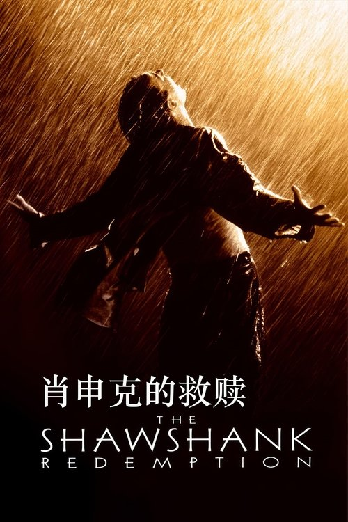

🎬The Shawshank Redemption tells the story of Andy Dufresne, a successful banker wrongly convicted of murdering his wife and her lover, who is sentenced to life at Shawshank State Penitentiary. Over two decades, Andy navigates the brutal realities of prison life with quiet dignity, forging an unlikely friendship with Ellis "Red" Redding — the man who can get things.
Based on Stephen King's novella Rita Hayworth and Shawshank Redemption, Frank Darabont's directorial debut is widely regarded as one of the greatest films ever made. It is not a story about prison — it is a story about hope, and what it means to hold onto your humanity when the world strips everything else away.
What makes The Shawshank Redemption endure, nearly three decades after its release, is not its plot mechanics — the escape, the warden's comeuppance — but its unwavering belief in hope as a moral force. Andy Dufresne, played with understated brilliance by Tim Robbins, is not a man who merely survives; he insists on living. He builds a library from nothing. He plays Mozart over the prison loudspeakers. He carves chess pieces from stone. These are not acts of rebellion — they are acts of self-preservation, assertions that the soul cannot be imprisoned.
Morgan Freeman's Red is the film's true heart — the man who narrates the story, who has learned to navigate the system so well that he has forgotten there is a world outside it. His arc from institutionalized despair to cautious optimism is, for me, the most moving part of the film. When he finally sits under that oak tree in Buxton, reading Andy's letter, the emotional payoff is earned over two hours of patient, deliberate storytelling.
Darabont's direction is remarkably restrained for a debut. Roger Deakins' cinematography bathes the prison in a kind of muted, elegiac light — never glamorizing, never exploiting. Thomas Newman's score, especially the "Brooks Was Here" theme, is hauntingly beautiful. The film trusts its audience to sit with silence, with slowness, with the weight of passing years. In an era of rapid cuts and constant stimulation, revisiting Shawshank feels restorative.
Foreshadowing. The film is a masterclass in setup and payoff. Andy asks Red for a rock hammer early on — a seemingly innocuous hobby item. The Warden's first inspection of Andy's cell, where he holds the Bible and says "Salvation lies within," plants a seed that pays off devastatingly. The poster of Rita Hayworth (later Marilyn Monroe, later Raquel Welch) is introduced as teenage decor; we don't realize it is a structural element of the plot until the final act. Every detail earns its place.
Institutionalization. The theme of institutionalization runs deeper than Brooks' tragic arc. Red's speech — "These walls are funny. First you hate 'em, then you get used to 'em" — applies not just to prison, but to any system that slowly extinguishes the ability to imagine an alternative. The film is psychologically precise about how freedom becomes frightening when it is no longer familiar.
The Mozart scene. Andy locks himself in the warden's office and plays Le Nozze di Figaro over the PA system. For two minutes, every man in the yard stops — not understanding the words, but understanding the feeling. Red's voiceover: "I have no idea to this day what those two Italian ladies were singing about... but I like to think it was something so beautiful it can't be expressed in words, and it makes your heart ache because of it." This is the thesis of the film: beauty and hope are worth pursuing even when — especially when — they serve no practical purpose.
No film is perfect, and Shawshank has its share of simplifications. The inmates of Shawshank are, by and large, anachronistically decent — the kind of murderers and thieves who are really just good men who made mistakes. The genuine brutality of prison life is softened, which makes the story more palatable but arguably less honest. The "sisters" (Bogs and his crew) are the only truly threatening presence, and they are dispatched relatively early.
The Shawshank Redemption is a film about the quiet, stubborn refusal to let the world define you. It earns its ending not through plot twists, but through the accumulation of small, human moments — a shared beer on a rooftop, a harmonica in the dark, a letter written from a place the writer has never been but always believed in. It is not a film that demands to be watched; it is a film that rewards being rewatched.
If you love character-driven storytelling, slow-burn emotional payoff, and films that treat hope not as naïveté but as a form of courage, this is essential viewing. For those who prefer faster pacing or morally ambiguous characters, the film's sincerity may feel dated — but its craftsmanship is undeniable.
| Story 故事 | |
|---|---|
| Acting 表演 | |
| Cinematography 摄影 | |
| Music 音乐 | |
| Overall 总分 |